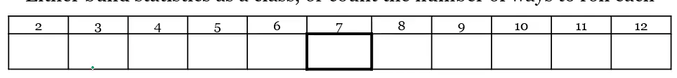

By the end of the lesson, the student will be able to explain the term uncertainty in relation to quantum science.
RPK: The student can perform simple algebraic operations, construct a histogram from frequency tables, solve basic probability exercises (demonstrate with a coin toss).
Roll two dice 14 times and record their sum in the spaces provided below.
Without rolling the two dice this time, complete the table by filling the blank spaces with possible outcomes of sums when two dice are rolled.
Construct a frequency table from the Observation Table B above.
Draw a HISTOGRAM for Table C on a graph sheet.
In quantum physics: Particles like electrons don't have a single definite position or momentum before measurement. Instead, they're described by a wavefunction, which gives a probability distribution for each observable. When we say there's "uncertainty" in position or momentum, we mean the spread (standard deviation) of the probability distribution of outcomes if we measured many times.
The Key Insight: Quantum uncertainty is not due to randomness in measurement or instruments — it's due to the fundamental probabilistic nature of the system itself.
To explore how waves interact with each other and create interference patterns.
| Condition | What pattern do you see on the screen? | Sketch or describe the pattern |
|---|---|---|
| Two slits, wave view ON |
| Condition | What pattern do you see on the screen? | Sketch or describe the pattern |
|---|---|---|
| Two slits, wave view ON | Alternating bright and dark bands (interference fringes) | Bright and dark stripes perpendicular to the slits |
| Condition | What does the full pattern look like after many electrons? |
|---|---|
| Two slits, electrons sent one at a time |
| Condition | What does the full pattern look like after many electrons? |
|---|---|
| Two slits, electrons sent one at a time | Interference pattern (fringes) builds up over time, just like with light |
To explore how light and particles like electrons behave when they pass through two slits, and observe the resulting interference patterns.
RPK: Interference, Diffraction, fringes
| Condition | What pattern do you see on the screen? | Sketch or describe the pattern |
|---|---|---|
| Two slits, wave view ON |
| Condition | What pattern do you see on the screen? | Sketch or describe the pattern |
|---|---|---|
| Two slits, wave view ON | Alternating bright and dark bands (interference fringes) | Bright and dark stripes perpendicular to the slits |
| Condition | What does the full pattern look like after many electrons? |
|---|---|
| Two slits, electrons sent one at a time |
| Condition | What does the full pattern look like after many electrons? |
|---|---|
| Two slits, electrons sent one at a time | Interference pattern (fringes) builds up over time, just like with light |
To investigate how light can knock electrons out of a metal surface (the photoelectric effect), and explore how this supports the idea that light acts like particles (photons).
RPK: Learners should know about light, intensity of light, the relationship frequency and wavelength of a wave.
Keep intensity constant (25%). Change wavelength (color) of the light.
| Color | Wavelength (nm) | Frequency | General Observation |
|---|---|---|---|
| Red | |||
| Orange | |||
| Yellow | |||
| Green | |||
| Blue | |||
| Indigo | |||
| Violet |
| Color | Wavelength (nm) | Frequency | General Observation |
|---|---|---|---|
| Red | ~700 | Low | No electrons ejected |
| Orange | ~620 | Low-Med | No electrons ejected |
| Yellow | ~580 | Medium | No electrons ejected |
| Green | ~530 | Medium-High | Electrons start to be ejected |
| Blue | ~470 | High | Electrons ejected |
| Indigo | ~425 | Very High | Electrons ejected |
| Violet | ~400 | Very High | Electrons ejected |
Use the ejector graphic or ammeter to tell if electrons are being ejected.
üí° Hint: Try moving from shorter to longer wavelengths (violet → red).
Pick a wavelength that does eject electrons (like violet or UV).
Change only intensity of light (keep wavelength the same).
| Intensity Level | How does the number of electrons change? |
|---|---|
| Level 10% | |
| Level 30% | |
| Level 50% | |
| Level 70% | |
| Level 90% | |
| Level 100% |
| Intensity Level | How does the number of electrons change? |
|---|---|
| Level 10% | Few electrons ejected |
| Level 30% | More electrons ejected |
| Level 50% | Even more electrons ejected |
| Level 70% | Number increases further |
| Level 90% | Almost maximum electrons ejected |
| Level 100% | Maximum electrons ejected |
Watch the number of electrons and the current in the circuit.
The photoelectric effect doesn't work like a wave: